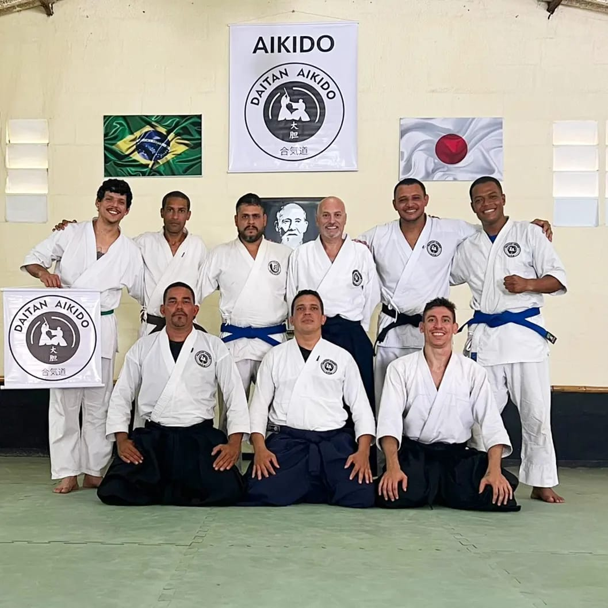
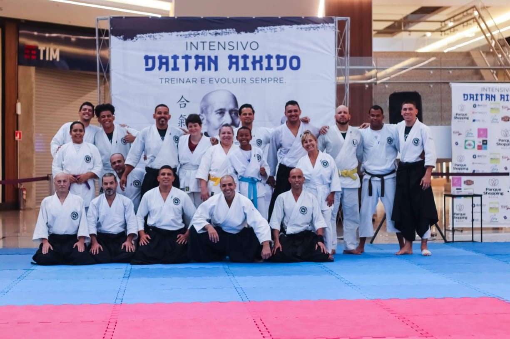
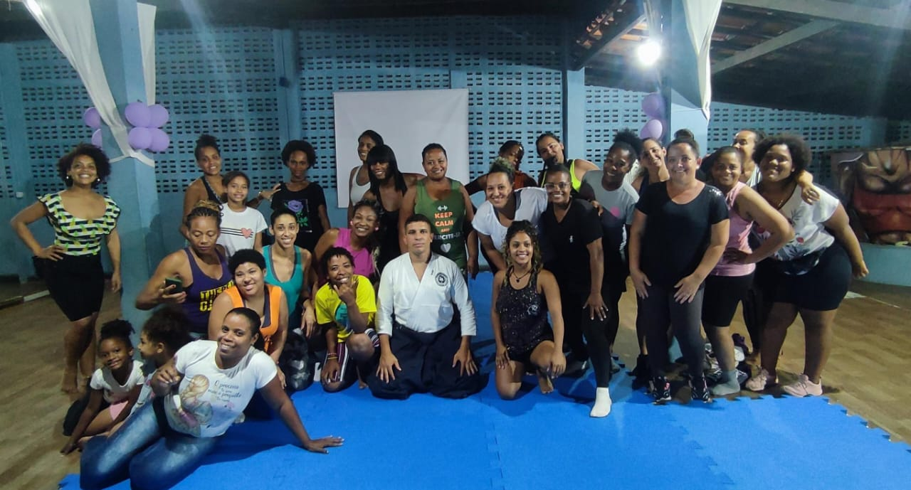
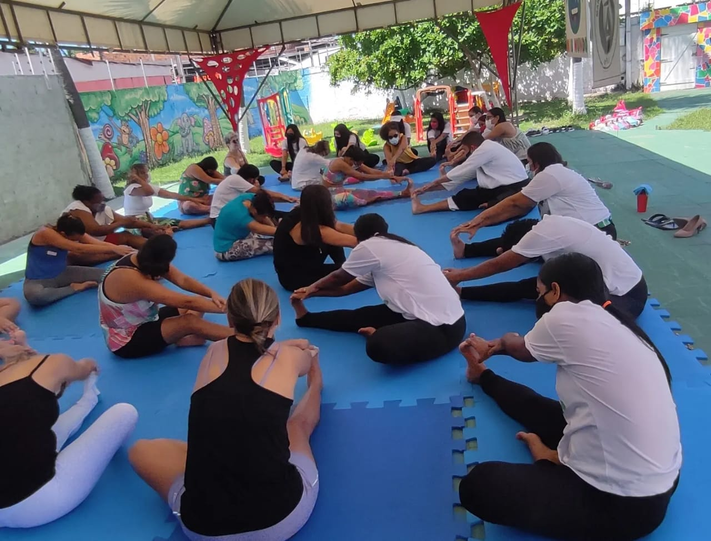
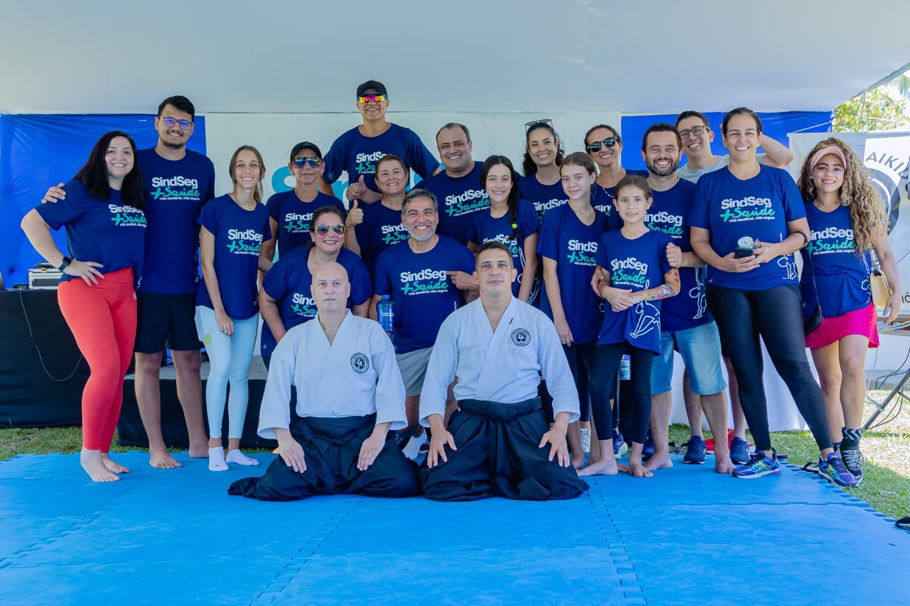
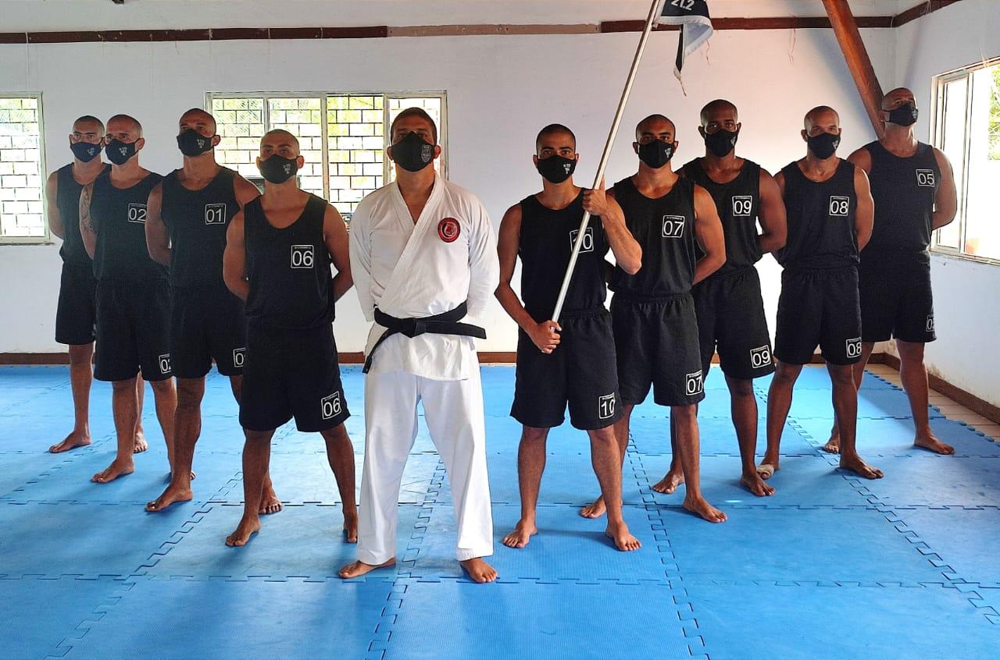
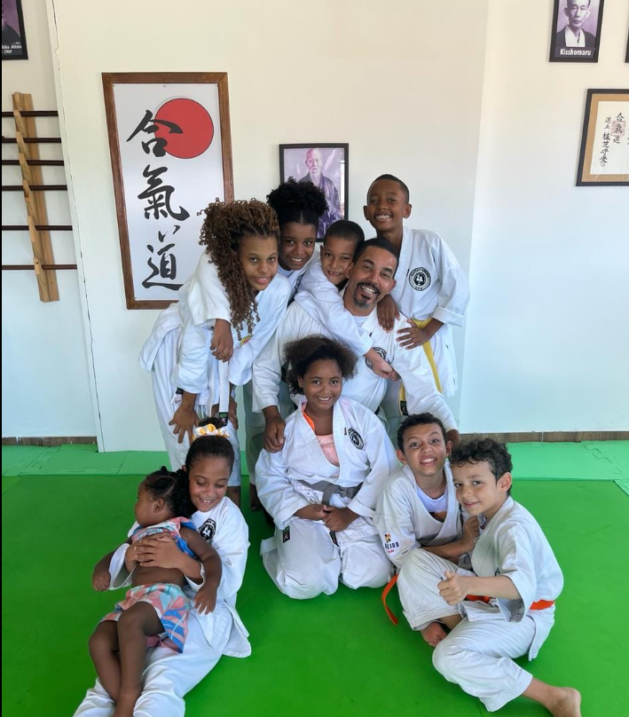
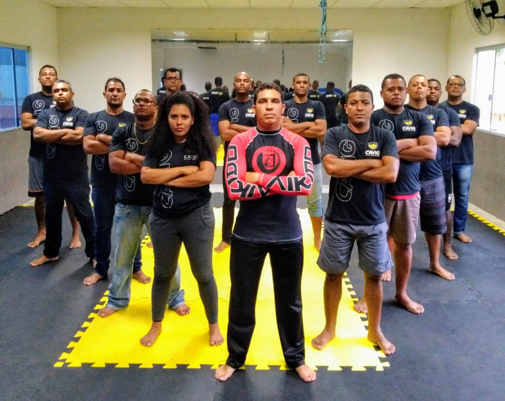
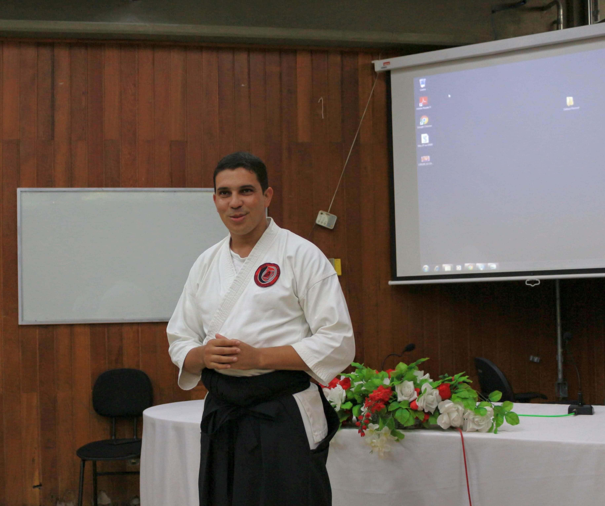

Aikido
Aikido (em japonês: 合気道, aikidō) é uma arte marcial japonesa desenvolvida pelo mestre Morihei Ueshiba (1883-1969), aproximadamente entre os anos de 1930 e 1960, como um compêndio dos seus estudos marciais, filosofia e crenças religiosas.
O aikido é, frequentemente, traduzido como "o caminho 道(DO) da unificação合(AI) com a energia da vida 気(KI)", ou "o caminho do espírito harmonioso". Consciente de que não poderia haver harmonia na destruição, Ô-Sensei começou a desenvolver os conceitos de sua própria Arte Marcial, em que não mais havia a ideia de vencer ou destruir um inimigo, mas pura e tão somente a de encerrar um conflito.
O cerne desta arte marcial orbita em torno do uso pragmático da energia num combate, no controle desse fluxo. Os praticantes desta arte respeitosamente chamam seu criador de O-Sensei ("Grande Mestre"), ou "fundador".
O Aikido foca na neutralização do atacante através do redirecionamento do ataque. Conhecida como a Arte da Paz, esta arte marcial procura usar o movimento do agressor contra ele mesmo. Pode ser estudada e praticada por pessoas de qualquer idade e das mais variadas profissões. No Aikido não há competição! O objetivo é que cada um vença a si mesmo. Vença seus medos e ideias errôneas. Esse conjunto torna o Aikido uma arte marcial ideal para todos e todas.
Daitan Aikido
Criado em 2022 pelo Sensei Uerlison Simões, o Daitan Aikido surgiu de uma paixão pela arte marcial e a vontade de difundir o Aikido na Bahia. Teve como primeira sede o Clube da APPM, localizado em Lauro de Freitas. Contou com o apoio fundamental dos Aikidocas Cristiano Tosta de Salvador/BA, João Ricardo e Igor de Feira de Santana/BA. Essa união foi fundamental para a criação e fortalecimento do grupo. As aulas ocorrem em dias e horários diferentes em cada uma das sedes, de acordo com as características da localidade e demandas dos alunos e Senseis responsáveis.
Professores
Sensei Uerlison Simões – 3º Dan, iniciou a prática de Aikido em 2007 e se apaixonou pela arte. Especialista em Segurança de Autoridades. Instrutor de Defesa Pessoal credenciado pela Polícia Federal. Instrutor de Defesa Pessoal para Forças de Segurança Pública e Privada. Instrutor de Defesa Pessoal para Segurança VIP. Pós graduando em Metodologia e Didática das Artes Marciais, Esportes de Combate e Lutas. Responsável pelo Daitan Aikido em Lauro de Freitas e Diretor Técnico do Daitan Aikido. Bacharel em Administração com ênfase em Gestão Negócios, MBA em Controladoria e Finanças.
Sensei Cristiano Tosta – 1° Dan, iniciou a prática de Aikido em 2012. Capacitação e metodologia de aulas para crianças, jovens e adultos. Cursos em pedagogia com didática positiva para jovens e adolescentes. Instrutor de Defesa pessoal credenciado pela Polícia federal. Detentor de didática moderna e criativa, desenvolve o trabalho de inclusão social para jovens e adolescentes em várias localidades, realiza cursos e palestras como instrutor de defesa pessoal para homens e mulheres. Colaborador e propulsor na criação do módulo "Aikidô kids", com aulas para crianças de 04 a 14 anos, com uma proposta muito positiva para todos os grupos, levando a mensagem da prática de exercícios físicos e o cuidado que devemos ter com a nossa saúde. Bacharel em Administração de empresas com cursos profissionalizantes.
Sensei João Ricardo - 1º Dan, iniciou a prática de Aikido em 2017, se apaixando pela arte e não parando desde então. Praticante de artes marciais desde a infância, sempre teve uma maior afinidade pelas disciplinas japonesas encontrando no Aikido um caminho de vida. Um dos intrutores responsáveis pelo Daitan Aikido na cidade de Feira de Santana.
Dojo
-
Lauro de Freitas: Clube da APPM, Av. José Leite, s/n, em frente ao Condomínio Family.(71) 98622-5839- Uerlison Simões Sensei
-
Salvador: Av. Paralela, ao lado do Parque de Exposições.(71) 99235-4301- Cristiano Tosta Sensei
-
Feira de Santana: Dojo Benvindo, Rua Miranda, 650b, Mangabeira.(75) 99173-0009- João Ricardo Sensei
Serviços
-

Aulas de Aikido
-

Treinos Intensivos
-

Defesa Pessoal para Mulheres – projeto “Sexo Frágil? A Opção é Sua!”
-

Aikido Até Você – Aulas em Condomínios
-

Aikido na sua Empresa – Atividade Laboral em SIPAT e afins
-

Defesa Pessoal e Especialização para Forças de Segurança Pública e Privada – Imobilizações Táticas
-

Aikido Kids – Aulas de Aikido para crianças no Dojo e em escolas
-

Segurança VIP
-

Palestras
Produtos
- Kimonos ou Dogi
- Camisa Treinar e evoluir
- Camisa Aikido
- Kit armas de madeira: Bokken (espada de madeira), Jo (bastão de madeira), Tanto (faca de madeira)
- Livro: Ebook Aikido - O seu caminho para um novo rumo. Escrito por Nelson Faria, praticante do Daitan Aikido. Disponível pelo link.
Redes Sociais
Siga-nos nas redes sociais para ficar por dentro das novidades, eventos e conteúdos exclusivos: